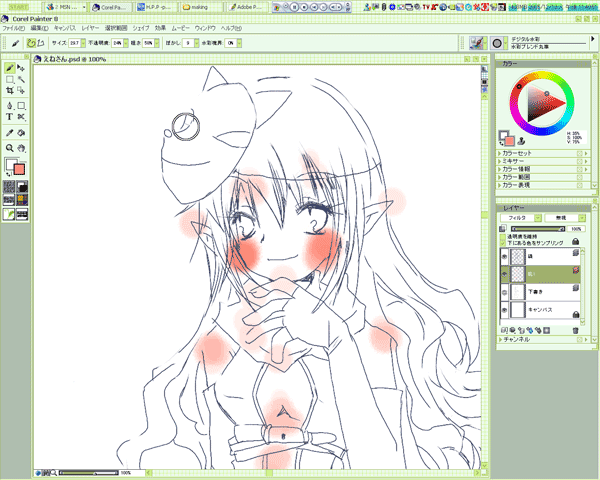
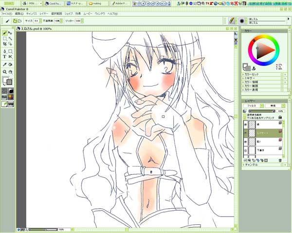
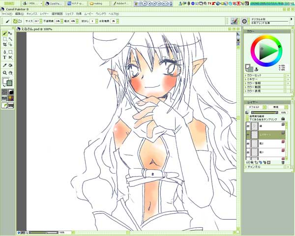

色塗りですよー。
まず肌を塗ります。
肌の影になるところと、赤くなるところ(何)を置いていく感じで。
塗りはデジタル水彩を使いました。
レイヤーの順序は線画を一番上にもってきて、その下に色塗りレイヤーを置いていきます。
こんなかんじで適当に。

ほっぺのところを赤くしすぎました(´・ω・`)
ペンタッチは普通の水彩の色塗りと同じような感じです(謎
音にするとぽんぽんってかんじかなー。
あんまりタブレットをぐいーっとひっぱりません。
例えば広範囲の色を塗るときは、筆を大きくしてなんどかクリックしていくかんじです。
筆は最大で80pxくらいかな。それ以上大きいと逆に変になります。
意味がよくわかりませんね。
はみ出たところを消しゴムで消します。
これで赤み終了。
次は肌の色塗りです。
また適当に暗いところを強く、明るいところを軽く、のイメージで。

こんなかんじでぼやーっと。
はみ出たところは消しゴムで消します。
はみでても気にしないっていいよねぇ。
これだけだとちょっと肌の強弱が弱いので、もう一度もう少し濃い肌色で色塗りします。

あぁん肌濃くしすぎたかもー。
とりあえず肌はこれで終了ですー。
前へ-次へ